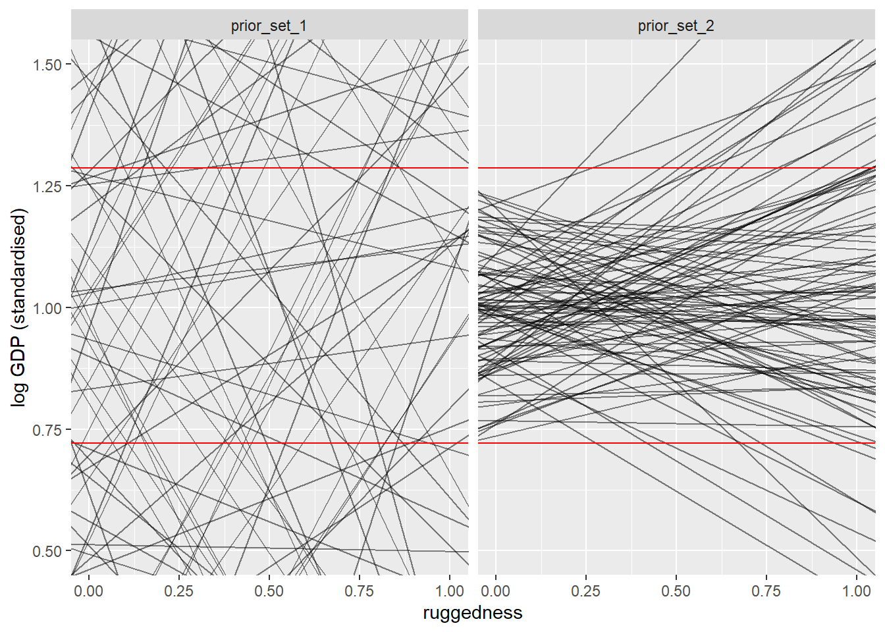
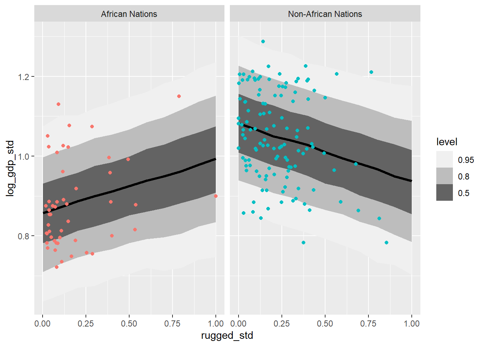
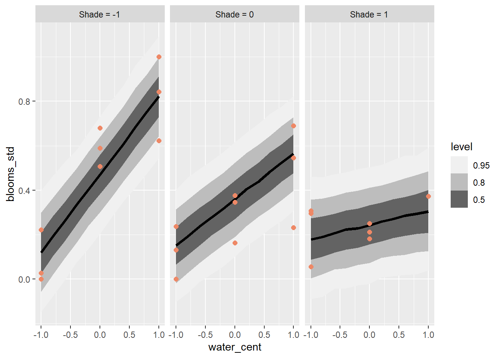

Chapter 8 Conditional Manatees
# Colours by Paul Tol.
# Defined in R by Joachim Goedhart
# Source: doi 10.5281/zenodo.3381072
tol_light <- c('#BBCC33', '#AAAA00', '#77AADD', '#EE8866', '#EEDD88', '#FFAABB', '#99DDFF', '#44BB99', '#DDDDDD')8.1 Chapter Notes
This model introduces interaction effects. The bulk of the chapter is made up of an example about the relationship between terrain ruggedness and GDP, and how this relationship changes with continent. For countries outside of Africa, terrain ruggedness is associated with a lower GDP. This relationship is reversed for countries within Africa. Here’s a DAG:
dag_rugged <- dagitty( "dag {U [unobserved];R -> G; C -> G; U->R; U -> G}")
coordinates(dag_rugged) <- list( x=c(R=0,G=1,U=1,C=2) , y=c(R=0,G=0,C=0,U=1) )
drawdag(dag_rugged)- R - terrain ruggedness
- G - GDP
- C - continent
- U - unobserved confounds that we’ll ignore for now
Note that the DAG is neutral on whether there’s an interaction effect here. Continent and ruggedness could independently effect GDP, or there could be some interaction (i.e. that the way ruggedness effects GDP is dependent on continent).
How do we model interaction effects? The chapter warns against splitting the data by continent, for these reasons:
- Some parameters (like \(\sigma\)) don’t depend on continent. Splitting the data makes the model less confident about these parameters unnecessarily.
- Without including continent in the model, you can’t quantify the value of distinguishing between African and non-African nations.
- If we want to compare models with e.g. information criteria, the models need to all be trained on the same data set.
- There are other advantages to pooling data that will become clear once we reach multi-level models in chapter 13.
Alright let’s get started with some modelling. We start by loading and processing the data.
Ruggedness & GDP Model
data(rugged)
data_rugged <- rugged %>%
mutate(log_gdp = log(rgdppc_2000))%>%
filter(!is.na(log_gdp)) %>%
mutate(log_gdp_std = log_gdp/ mean(log_gdp), # standardising
rugged_std = rugged/ max(rugged), # keeping zero ruggedness as a reference point
cid= if_else(cont_africa==1,1,2), # continent ID
cid = factor(cid))Here’s our first pass model, no interaction effects:
\[ \begin{aligned} \log(y_i) &\sim \text{Normal}(\mu_i,\sigma)\\ \mu_i &= \alpha + \beta(r_i - \bar{r}) \\ \alpha &\sim \text{Normal}(1,0.1)\\ \beta &\sim \text{Normal}(0,0.3)\\ \sigma &\sim \text{Exponential}(1) \end{aligned} \] The chapter does a bit of prior predictive simulation to compare the following priors:
- Prior Set 1 - \(\alpha \sim \text{Normal}(1.1), \beta \sim \text{Normal}(0,1)\)
- Prior Set 2 - \(\alpha \sim \text{Normal}(1.0.1), \beta \sim \text{Normal}(0,0.3)\)
and settles on the latter. Here’s a plot of 100 prior samples from each:
# we generate 100 samples from each of our prior distributions
priors_rugged <- tibble(a=c(rnorm(100, mean = 1, sd=1),rnorm(100, mean = 1, sd=0.1)),
b=c(rnorm(100, mean = 0, sd=1),rnorm(100, mean = 0, sd=0.3)),
prior_set = c(rep("prior_set_1",100),rep("prior_set_2",100)))
# we plot the lines they imply
ggplot(priors_rugged)+
geom_abline(aes(slope = b,
intercept = a - b*mean(data_rugged$rugged_std) ),alpha=0.5)+ # setting intercept so that x-axis ranges over (0,1)
xlim(0,1)+
ylim(0.5, 1.5)+
geom_hline(yintercept = max(data_rugged$log_gdp_std), colour = "red")+
geom_hline(yintercept = min(data_rugged$log_gdp_std), colour = "red")+
xlab("ruggedness")+
ylab("log GDP (standardised)")+
facet_wrap(~prior_set) 
The red lines are the maximum and minimum GDP observed. Here’s the model with quap, and its posterior:
# regression of log gdp on ruggedness with no interactions
set.seed(100)
m8_1 <- quap( alist(
log_gdp_std ~ dnorm( mu , sigma ) ,
mu <- a + b*( rugged_std - 0.215 ) ,
a ~ dnorm( 1 , 0.1 ) ,
b ~ dnorm( 0 , 0.3 ) , sigma ~ dexp(1)
) , data=data_rugged )
# posterior draws with tidybayes
m8_1 %>%
gather_draws(a, b, sigma) %>%
mean_qi(.width=0.89)%>%
print(digits = 3)## # A tibble: 3 x 7
## .variable .value .lower .upper .width .point .interval
## <chr> <dbl> <dbl> <dbl> <dbl> <chr> <chr>
## 1 a 1.00 0.983 1.02 0.89 mean qi
## 2 b 0.00150 -0.0867 0.0870 0.89 mean qi
## 3 sigma 0.137 0.125 0.149 0.89 mean qiLooking at \(b\), we can see that there’s not much of an association between ruggedness and GDP.
Now to interaction effects. We start by letting the intercept vary with continent (in Africa or not in Africa). That looks like this:
\[ \mu_i = \alpha_{\text{CID}[i]} + \beta(r_i - \bar{r}) \] where CID is an index variable - 1 for for African nations, 2 otherwise. Here’s the model, and the posterior:
set.seed(100)
m8_2 <- quap( alist(
log_gdp_std ~ dnorm( mu , sigma ) ,
mu <- a[cid] + b*( rugged_std - 0.215 ) ,
a[cid] ~ dnorm( 1 , 0.1 ) ,
b ~ dnorm( 0 , 0.3 ) ,
sigma ~ dexp( 1 )
) , data=data_rugged )
m8_2 %>%
gather_draws(a[CID], b, sigma) %>% # is this the best way to display index variables with tidybayes? revisit
mean_qi(.width=0.89)%>%
print(digits = 3)## Warning: `gather_()` was deprecated in tidyr 1.2.0.
## Please use `gather()` instead.
## This warning is displayed once every 8 hours.
## Call `lifecycle::last_lifecycle_warnings()` to see where this warning was generated.## # A tibble: 4 x 8
## CID .variable .value .lower .upper .width .point .interval
## <int> <chr> <dbl> <dbl> <dbl> <dbl> <chr> <chr>
## 1 1 a 0.880 0.854 0.905 0.89 mean qi
## 2 2 a 1.05 1.03 1.07 0.89 mean qi
## 3 NA b -0.0461 -0.118 0.0275 0.89 mean qi
## 4 NA sigma 0.112 0.103 0.122 0.89 mean qiThe intercept for African nations seems to be notably lower.
Now we compare the two models using WAIC:
compare( m8_1 , m8_2 )## WAIC SE dWAIC dSE pWAIC weight
## m8_2 -251.8309 15.30478 0.00000 NA 4.442314 1.000000e+00
## m8_1 -188.7003 13.33426 63.13055 15.18786 2.720143 1.956026e-14The varying intercept model gets all of the model weight.
Here’s the posterior plot for this model.
Revisit this - wrote this last year and it could be much cleaner. Would prefer to recreate it using tidybayes, ggdist.
rugged_seq <- seq( from=-0.1 , to=1.1 , length.out=30 ) # compute mu over samples, fixing cid=2 and then cid=1
mu_not_africa <- as_tibble(link( m8_2 ,
data=tibble( cid=2 , rugged_std=rugged_seq ) ))
mu_africa <- as_tibble(link( m8_2 ,
data=tibble( cid=1 , rugged_std=rugged_seq ) ))
not_africa_lower <- purrr::map_dbl(mu_not_africa,quantile,probs=0.025,names=FALSE)
not_africa_mean <- purrr::map_dbl(mu_not_africa,mean)
not_africa_upper <- purrr::map_dbl(mu_not_africa,quantile,probs=0.975,names=FALSE)
africa_lower <- purrr::map_dbl(mu_africa,quantile,probs=0.025,names=FALSE)
africa_mean <- purrr::map_dbl(mu_africa,mean)
africa_upper <- purrr::map_dbl(mu_africa,quantile,probs=0.975,names=FALSE)
shaded_interval <- tibble(rugged = rugged_seq, na_lower = not_africa_lower, na_mean = not_africa_mean, na_upper = not_africa_upper,
a_lower = africa_lower, a_mean = africa_mean, a_upper = africa_upper)
rugged_precis <- precis(m8_2,depth=2)
ggplot(data = shaded_interval)+
geom_point(data = data_rugged, mapping = aes(x=rugged_std, y = log_gdp_std, colour = cid))+
# geom_line(aes(x=rugged,y=na_mean),colour="#00BFC4")+
# geom_line(aes(x=rugged,y=a_mean),colour="#F8766D")+
geom_abline(data=rugged_precis, aes(intercept = mean[2],slope = mean[3]), colour= "#00BFC4")+
geom_abline(data=rugged_precis, aes(intercept = mean[1],slope = mean[3]), colour= "#F8766D")+
geom_ribbon(aes(x=rugged,ymin=na_lower,ymax=na_upper),alpha=0.1,fill="#00BFC4")+
geom_ribbon(aes(x=rugged,ymin=a_lower,ymax=a_upper),alpha=0.1,fill="#F8766D")+
xlim(0, 1)+
xlab("Ruggedness")+
ylab("Log GDP")+
theme(legend.position = "none")Our model does not allow the slope to vary by continent. Here’s what we need for that:
\[ \mu_i = \alpha_{\text{CID}[i]} + \beta_{\text{CID}[i]}(r_i - \bar{r}) \]
And here’s the model with the posterior:
# model allowing slopes to vary
set.seed(100)
m8_3 <- quap( alist(
log_gdp_std ~ dnorm( mu , sigma ) ,
mu <- a[cid] + b[cid]*( rugged_std - 0.215 ) ,
a[cid] ~ dnorm( 1 , 0.1 ) ,
b[cid] ~ dnorm( 0 , 0.3 ) ,
sigma ~ dexp( 1 )
) , data=data_rugged )
m8_3 %>%
gather_draws(a[CID], b[CID], sigma) %>% # is this the best way to display index variables with tidybayes? revisit
mean_qi(.width=0.89)%>%
print(digits = 3)## # A tibble: 5 x 8
## CID .variable .value .lower .upper .width .point .interval
## <int> <chr> <dbl> <dbl> <dbl> <dbl> <chr> <chr>
## 1 1 a 0.887 0.861 0.912 0.89 mean qi
## 2 1 b 0.133 0.0171 0.252 0.89 mean qi
## 3 2 a 1.05 1.03 1.07 0.89 mean qi
## 4 2 b -0.141 -0.225 -0.0541 0.89 mean qi
## 5 NA sigma 0.109 0.0999 0.119 0.89 mean qiCompare the slope \(\beta\) for countries inside Africa (CID 1) to the slope for non-African countires (CID 2). It is reversed.
We compare the models using PSIS:
compare( m8_1 , m8_2 , m8_3 , func=PSIS )## Some Pareto k values are high (>0.5). Set pointwise=TRUE to inspect individual points.## PSIS SE dPSIS dSE pPSIS weight
## m8_3 -258.9662 15.25083 0.000000 NA 5.221461 9.716247e-01
## m8_2 -251.8993 15.42071 7.066903 6.574883 4.430118 2.837527e-02
## m8_1 -188.6182 13.27438 70.347931 15.482071 2.752669 5.148010e-16As well as the table attributing almost all of the weight to the interacting slopes model, we also get a warning about some high-influence countries.
Here’s a plot:
grid_rugged <- data_grid(data_rugged,
rugged_std=seq_range(rugged_std, n = 11),
cid)
add_predicted_draws(grid_rugged,m8_3,
value = "log_gdp_std")%>% # naming the draw outputs to be consistent with data_rugged for convenience
mutate(nation = if_else(cid==1,"African Nations","Non-African Nations"))%>% # for plot titles
ggplot(aes(x=rugged_std, y = log_gdp_std))+
stat_lineribbon()+
geom_point(data=data_rugged%>%
mutate(nation = if_else(cid==1,"African Nations","Non-African Nations")) # need to also add nation here for facetting
, aes(colour = nation))+
facet_wrap(~nation)+
scale_fill_brewer(palette = "Greys")+
guides(colour="none") Now our intercepts and slopes are allowed to vary. I am a bit concerned that the uncertainty around the mean doesn’t seem to change very much over the range of ruggedness. There are a lot more flat countries than rugged ones. I’m pretty sure stat_lineribbon does not force the homogeneity here. Need to revisit. Cf. the plots in the chapter, page 250. Pretty confident this shouldn’t be happening, and it doesn’t happen when I recreate this same plot with Stan and draw samples (see the version of the same plot in the next chapter).
The chapter notes that from the perspective of the model, the interactions are symmetrical. The questions:
- How much the association between ruggedness and GDP depend on whether the nation is in Africa?, and
- How much does the association between whether the nation is in Africa and GDP depend on ruggedness?
cannot be distinguished by the model.
The next example in the chapter concerns interaction effects between two or more continuous variables. The categorical case we’ve just seen means we create a new slope and intercept for each category. The continuous case is harder - we must allow the slope to vary continuously with a continuous variable.
The example in the chapter concerns the size of tulip blooms under different soil and lighting conditions. We load in the data:
data(tulips)
data_tulips <- as_tibble(tulips) %>%
mutate(blooms_std = blooms / max(blooms), # setting between 0 and 1
water_cent = water - mean(water), # centering on 0
shade_cent = shade - mean(shade))Here’s the model where both water and shade predict bloom size, but there are no interactions:
\[ \begin{aligned} B_i &\sim \text{Normal}(\mu_i,\sigma) \\ \mu_i &= \alpha + \beta_WW_i + \beta_SS_i \end{aligned} \]
After some thinking about priors, here’s the model:
m8_4 <- quap( alist(
blooms_std ~ dnorm( mu , sigma ) ,
mu <- a + bw*water_cent + bs*shade_cent ,
a ~ dnorm( 0.5 , 0.25 ) ,
bw ~ dnorm( 0 , 0.25 ) ,
bs ~ dnorm( 0 , 0.25 ) ,
sigma ~ dexp( 1 )
) , data=data_tulips )But we want interactions. We want the impact of changing either water or shade to be conditional on the level of the other variable. As the chapter puts it:
if water is low, then decreasing the shade can’t help as much as when water is high.
We’ll end up with something like this:
\[ \begin{aligned} B_i &\sim \text{Normal}(\mu_i,\sigma) \\ \mu_i &= \alpha + \gamma_{W,i}W_i + \beta_SS_i \\ \gamma_{W,i} & = \beta_W + \beta_{WS}S_i \end{aligned} \]
Our parameter \(\gamma_{W,i}\) is now the slope that defines how the size of the blooms change with the level of water, and this depends partly on shade. The point about symmetry from earlier still holds, we can expand out the above to get:
\[ \begin{aligned} B_i &\sim \text{Normal}(\mu_i,\sigma) \\ \mu_i &= \alpha + \beta_W W + \beta_SS_i + \beta_{WS}S_iW_i\\ \end{aligned} \]
Here’s the model:
m8_5 <- quap( alist(
blooms_std ~ dnorm( mu , sigma ) ,
mu <- a + bw*water_cent + bs*shade_cent + bws*water_cent*shade_cent ,
a ~ dnorm( 0.5 , 0.25 ) ,
bw ~ dnorm( 0 , 0.25 ) ,
bs ~ dnorm( 0 , 0.25 ) ,
bws ~ dnorm( 0 , 0.25 ) ,
sigma ~ dexp( 1 )
) , data=data_tulips )Let’s try to plot from the posterior. The way the chapter recommends doing this is by creating multiple charts to show the slopes for different levels of one of the variables. Facetting by this variable, in ggplot terms.
grid_tulips <- data_grid(data_tulips,
# using 11 grid points for water
# there are really only 3 levels in the data but I want to be able to extend this to other continuous variables
water_cent=seq_range(water_cent, n = 11),
# however I only need as many grid points for shade as facets I want in the plot. I've chosen 3
shade_cent=seq_range(shade_cent, n = 3))
add_predicted_draws(grid_tulips,m8_5,
value = "blooms_std")%>% # naming the draw outputs to be consistent with data_tulips for convenience
mutate(shade_level = paste("Shade =",shade_cent))%>%
ggplot(aes(x=water_cent, y = blooms_std))+
stat_lineribbon()+
geom_point(data=data_tulips%>%
mutate(shade_level = paste("Shade =",shade_cent)) # need to create shade_level here also for facetting to work. bit clumsy.
, colour = tol_light[[4]],size=2)+
facet_wrap(~shade_level)+
scale_fill_brewer(palette = "Greys")
Nice. When shade is lowest, water has its highest effect on bloom size.
8.2 Questions
8E1
Question
For each of the causal relationships below, name a hypothetical third variable that would lead to an interaction effect.
Bread dough rises because of yeast.
Education leads to higher income.
Gasoline makes a car go.
Answer
Here are three hypotheses about interaction effects:
The amount that yeast causes bread dough to rise depends on temperature.
The effect that education has on income depends on the industry you work in.
That effect that gasoline has on car speed depends on whether the engine is running.
8E2
Question
Which of the following explanations invokes an interaction?
Caramelizing onions requires cooking over low heat and making sure the onions do not dry out.
A car will go faster when it has more cylinders or when it has a better fuel injector.
Most people acquire their political beliefs from their parents, unless they get them instead from their friends.
Intelligent animal species tend to be either highly social or have manipulative appendages (hands, tentacles, etc.).
Answer
This is an interaction effect. The effect of low heat on caramelisation depends on moisture.
I don’t know enough about car engines to know if this is an interaction effect. The question doesn’t suggest that the effect of additional cylinders depends on fuel injector quality, so this wouldn’t be an interaction effect.
Can interpret this sentence as an interaction effect: the effect a person’s parents’ political beliefs on them depends on whether they have adopted their friends’ beliefs.
Don’t think this suggests an interaction effect.
8E3
Question
For each of the explanations in 8E2, write a linear model that expresses the stated relationship.
Answer
- Caramelizing onions requires cooking over low heat and making sure the onions do not dry out.
\[ \begin{aligned} &\text{Caramelisation} \sim \text{Normal}(\mu,\sigma) \\ &\mu = \alpha + \beta_{h} * \text{heat} + \beta_w * \text{water} + \beta_i * \text{heat}*\text{water} \end{aligned} \]
- A car will go faster when it has more cylinders or when it has a better fuel injector.
\[ \begin{aligned} &\text{Speed} \sim \text{Normal}(\mu,\sigma) \\ &\mu = \alpha + \beta_{c} * \text{cylinders} + \beta_f * \text{fuel injector quality} \\ \end{aligned} \]
- Most people acquire their political beliefs from their parents, unless they get them instead from their friends.
\[ \begin{aligned} &\text{beliefs} \sim \text{Normal}(\mu,\sigma) \\ &\mu_i = \alpha + \beta_{p} * \text{parents' beliefs}_i + \beta_f * \text{friends' beliefs}_i + \beta_i * \text{parents' beliefs}_i*\text{friends' beliefs}_i \\ \end{aligned} \]
- Intelligent animal species tend to be either highly social or have manipulative appendages (hands, tentacles, etc.).
\[ \begin{aligned} &\text{intelligence} \sim \text{Normal}(\mu,\sigma) \\ &\mu_i = \alpha + \beta_{s} * \text{sociality}_i + \beta_a * \text{appendages}_i \\ \end{aligned} \]
The statement above doesn’t suggest that sociality or manipulative appendages cause intelligence. But that if you want to predict a species’ intelligence, having information about either of those two traits will help you.
8M1
Question
Recall the tulips example from the chapter. Suppose another set of treatments adjusted the temperature in the greenhouse over two levels: cold and hot. The data in the chapter were collected at the cold temperature. You find none of the plants grown under the hot temperature developed any blooms at all, regardless of the water and shade levels.
Can you explain this result in terms of interactions between water, shade, and temperature?
Answer
The effect of water and shade on the development of blooms depends on temperature. At hot temperatures, no amount of light and water will cause blooms.
8M2
Question
Can you invent a regression equation that would make the bloom size zero, whenever the temperature is hot?
Answer
Here’s the original model:
\[ \begin{aligned} &\text{B}_i \sim \text{Normal}(\mu,\sigma) \\ &\mu = \alpha + \beta_{W} * \text{W}_i + \beta_S * \text{S}_i + \beta_{WS} * \text{W}_i* \text{S}_i \\ \end{aligned} \]
Here’s one that produces no blooms whenever temperature is hot:
\[ \begin{aligned} &\text{B}_i \sim \text{Normal}(\mu,\sigma) \\ &\mu = \left( alpha + \beta_{W} * \text{W}_i + \beta_S * \text{S}_i + \beta_{WS} * \text{W}_i* \text{S}_i \right) * \text{cold} \\ \end{aligned} \]
Where the cold variable can take two values, 1 for cold and 0 for hot.
8M3
Question
In parts of North America, ravens depend upon wolves for their food. This is because ravens are carnivorous but cannot usually kill or open carcasses of prey. Wolves however can and do kill and tear open animals, and they tolerate ravens co-feeding at their kills. This species relationship is generally described as a “species interaction.”
Can you invent a hypothetical set of data on raven population size in which this relationship would manifest as a statistical interaction? Do you think the biological interaction could be linear? Why or why not?
Answer
What is the outcome variable of interest? Is it population of ravens?
Raven population size Wolf population size Prey population size
It may not be linear - perhaps when there are few wolves, increasing the number of wolves permits the raven population to increase with the number of prey animals